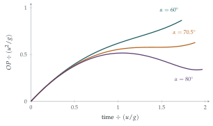

STEP II 2019, Question 9
Read the question before you go on. It is in the STEP II paper in OCR’s download of the 2019 STEP papers (a zip file): www.ocr.org.uk/Images/696590-2019-past-papers.zip
The hook
Throw a ball forwards and it moves away from you until it lands. Obviously. Throw it straight up and it comes back. Somewhere in between, something must change: there must be angles at which the ball moves away, then comes closer, then moves away again before landing. This question finds the exact threshold, \(\sin\alpha = \frac{2\sqrt2}{3}\), or about \(70.5^\circ\).
The result is a nice example of a common situation in mathematics: a quantity everyone assumes is monotonic, which is not. It also shows a standard technique, used constantly at university: to find out whether a distance is increasing, differentiate its square, which avoids square roots.
Before you start
Why is it easier to work with \(OP^2\) than with \(OP\)? Is “\(OP\) is increasing” the same as “\(OP^2\) is increasing”?
\(OP^2 = x^2 + y^2\) is a polynomial in \(t\), while \(OP\) involves a square root. Since \(OP \geq 0\), and squaring is increasing on non-negative numbers, \(OP\) increases exactly when \(OP^2\) does.
Working it through
Stage 1 The squared distance
With \(x = ut\cos\alpha\) and \(y = ut\sin\alpha - \frac12gt^2\), \[OP^2 = u^2t^2\cos^2\alpha + u^2t^2\sin^2\alpha - ugt^3\sin\alpha + \tfrac14g^2t^4 = u^2t^2 - ugt^3\sin\alpha + \tfrac14g^2t^4.\]
Differentiate with respect to \(t\). After taking out a factor of \(t\), what is left? When is it positive for all \(t\)?
\[\frac{\mathrm{d}}{\mathrm{d}t}OP^2 = 2u^2t - 3ugt^2\sin\alpha + g^2t^3 = t\bigl(g^2t^2 - 3ug\sin\alpha\,t + 2u^2\bigr).\] For \(t > 0\), the sign is that of the quadratic \(g^2t^2 - 3ug\sin\alpha\,t + 2u^2\). This quadratic has positive leading coefficient, so it is positive for every \(t\) if its discriminant is negative: \[9u^2g^2\sin^2\alpha - 8u^2g^2 < 0 \quad\Longleftrightarrow\quad \sin^2\alpha < \frac89 \quad\Longleftrightarrow\quad \sin\alpha < \frac{2\sqrt2}{3}.\] In that case \(OP\) is increasing throughout the flight.■
Stage 2 Steeper throws
If \(\sin\alpha > \frac{2\sqrt2}{3}\), the quadratic has two real roots. Are they positive? Is the smaller one before the particle lands?
The roots have sum \(\frac{3u\sin\alpha}{g} > 0\) and product \(\frac{2u^2}{g^2} > 0\), so both are positive, and between them the quadratic, and so \(\frac{\mathrm{d}}{\mathrm{d}t}OP^2\), is negative. The particle lands at \(T = \frac{2u\sin\alpha}{g}\). The smaller root is \[t_1 = \frac{u}{2g}\bigl(3\sin\alpha - \sqrt{9\sin^2\alpha - 8}\bigr) < \frac{u}{2g}\cdot3\sin\alpha < \frac{2u\sin\alpha}{g} = T.\] So just after \(t_1\) (and before landing) \(OP\) is decreasing.■

Stage 3 A moving observer
\(Q\) moves away from \(O\) along the ground in the opposite direction, at speed \(v\). Measured from \(Q\), the horizontal separation is \(x + vt\). What does that do to the calculation?
The separation \(QP\) has horizontal component \((u\cos\alpha + v)t\) and vertical component \(ut\sin\alpha - \frac12gt^2\). So \[QP^2 = \bigl((u\cos\alpha + v)^2 + u^2\sin^2\alpha\bigr)t^2 - ugt^3\sin\alpha + \tfrac14g^2t^4,\] the same as before with \(u^2\) replaced by \(w^2 = (u\cos\alpha + v)^2 + u^2\sin^2\alpha\) in the first term. The derivative is \(t\bigl(g^2t^2 - 3ug\sin\alpha\,t + 2w^2\bigr)\), and the condition for it to be positive for all \(t > 0\) is \[9u^2\sin^2\alpha < 8w^2 \quad\Longleftrightarrow\quad u^2\sin^2\alpha < 8(u\cos\alpha + v)^2,\] after cancelling \(8u^2\sin^2\alpha\) from both sides. Taking square roots (both \(u\sin\alpha\) and \(u\cos\alpha + v\) are positive), this is \(u\sin\alpha < 2\sqrt2(u\cos\alpha + v)\), which rearranges to \[2\sqrt2\,v > (\sin\alpha - 2\sqrt2\cos\alpha)u. \qed\] (This is sufficient for \(QP\) to increase throughout the flight, since the derivative is then positive for all \(t > 0\).)
Looking back
Differentiate the square. Squared distances are polynomials, and their derivatives have the same sign as the derivative of the distance.
A quadratic that is always positive. The condition “increasing for all time” became a discriminant condition.
A new problem as an old one. The moving observer only changed one coefficient, so the earlier analysis applied directly.
What’s really going on
A geometric view
\(OP\) decreases exactly when the velocity of \(P\) points “inwards”, making an obtuse angle with the vector \(\overrightarrow{OP}\), that is, when \(\overrightarrow{OP}\cdot\mathbf{v} < 0\). For a steep throw, near the top of the flight the particle is high above and slightly in front of the thrower, moving almost horizontally away, but starting to fall; once the downward part of its velocity outweighs the outward part, relative to the direction of \(\overrightarrow{OP}\), it comes closer. For shallow throws the particle is always far enough in front that its velocity never points back towards \(O\). The critical case is when the velocity is perpendicular to \(\overrightarrow{OP}\) at exactly one instant, the moment when the distance pauses in Figure 11.10.1.
Monotonicity is not automatic
Many quantities that “obviously” increase do not. The distance of the Moon from the Earth oscillates; the distance between two cars on a winding road can decrease even when one is always ahead; the population of a predator can fall while its prey multiplies. Proving that a quantity is monotonic usually means showing that a derivative has a fixed sign, and the technique here (reduce to a polynomial, then check its roots or discriminant) is the standard way to do it. In analysis, monotonicity is often the key to proving convergence: a bounded monotonic sequence converges, as you saw in Chapter 2.
The thinking skill
To decide whether a quantity always increases, differentiate it (or a convenient function of it, such as its square) and ask whether the derivative can change sign.
At university, sign arguments of this kind are used to prove inequalities, to locate maxima and minima, and to study the stability of solutions of differential equations, where a quantity that always decreases (as in Section 8.2) proves that a system settles down.
Try this next
How close? For \(\alpha = 80^\circ\), find the times at which \(OP\) has its local maximum and minimum, and the distances there, in units of \(u^2/g\).
On a slope. Repeat part (i) for a ball thrown up a plane inclined at angle \(\beta\) to the horizontal, landing on the plane. Does the critical angle (measured from the plane) change?
With air resistance. Suppose the ball also experiences a resistance proportional to its velocity. Without calculating, would you expect the critical angle to be larger or smaller than \(70.5^\circ\)? Why?
Throwing from a height. If the ball is thrown from the top of a cliff and lands far below, show that \(OP\) eventually increases for any angle, and find whether there are angles for which it decreases at some stage.
Further reading
James Walker, The Flying Circus of Physics (Wiley). Hundreds of surprising everyday physics puzzles.
David Morin, Introduction to Classical Mechanics (Cambridge University Press), Chapter 3, on projectiles, with several counter-intuitive problems.
J. M. Steele, The Cauchy–Schwarz Master Class (Cambridge University Press). The art of proving that one thing is always bigger than another.